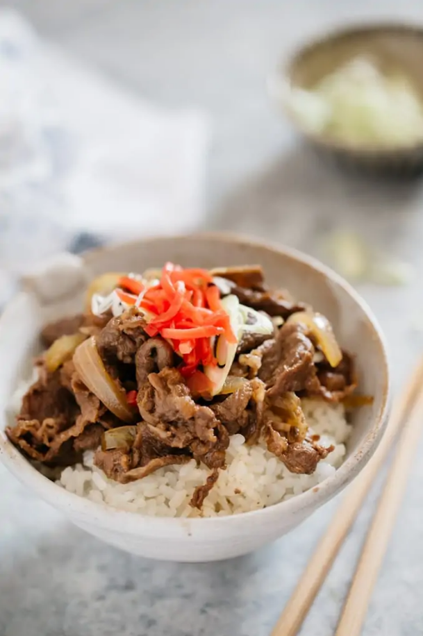

Gyudon Beef Bowl

Description
A japanese fast food of sweet soy sauce flavored sliced pork over rice.
Recipe Credits
Ingredients
- 150 g thinly sliced beef
- 1/2 onion
- 1 tbsp red pickled ginger for topping
- 1 tbsp diagonally and thinly sliced scallion for topping
- 3 cups cooked Japanese rice
- 1/2 tbsp olive oil
For Sauce
- 200 ml water
- 1 tsp dashi powder
- 2 tsp sugar
- 1 tbsp sake
- 1 tbsp mirin
- 1 tsp ginger juice
- 2 tbsp soy sauce
Instructions
- Slice the onion into wedges.
- Heat the olive oil in a saucepan over medium heat and cook the onion.
- Once the onion becomes translucent, add all the sauce ingredients.
- Bring it to simmer and add thinly sliced beef and cook about 5 minutes over medium heat.
- Once the beef has cooked and the sauce has reduced a bit, remove from the heat.
- Serve over a bowl of rice and garnish with scallions and red ginger pickles.
Back to Home Page